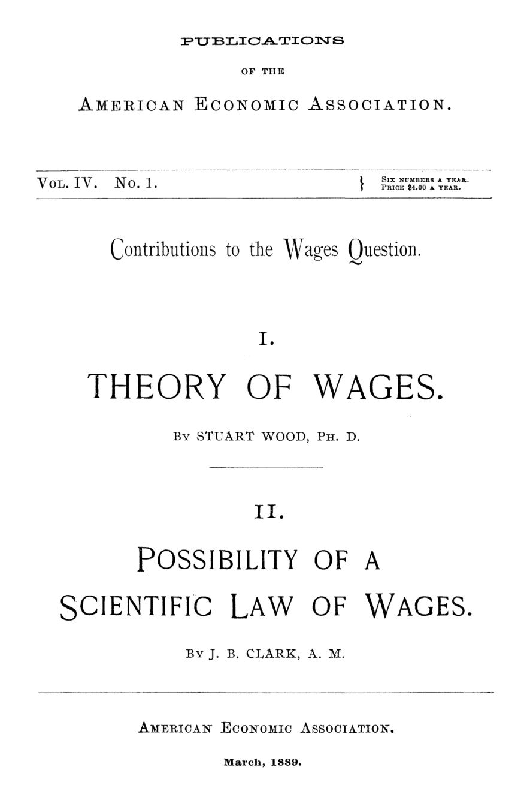

Quem fixa o salário? Duas tentativas de achar a lei, em 1888
Leitura: 8 min
Em dezembro de 1888, dois economistas tentaram enterrar a doutrina do fundo de salários. Um olhou para a troca entre homem e máquina; o outro, para o último trabalhador contratado.


Numa nota de rodapé, Stuart Wood registra um relato ouvido num seminário da Wharton School: em certas cidades mineiras e fabris da Pensilvânia, a demanda por trabalhadores húngaros dependeria do preço das mulas. O exemplo é cru, e foi escolhido por isso. Resume a tese de Wood: o trabalho humano compete com o de animais e máquinas, e seu preço obedece à mesma lei de oferta e demanda que rege o preço de cavalos e locomotivas.
Os dois textos desta edição foram lidos em 27 de dezembro de 1888, no terceiro encontro anual da American Economic Association, em Filadélfia, e publicados em março de 1889 sob o título comum de contribuições à questão salarial. O alvo era o mesmo: a doutrina do fundo de salários, segundo a qual uma parcela fixa do capital é repartida periodicamente entre os trabalhadores, de modo que o salário médio seria simplesmente esse fundo dividido pelo número de assalariados.
Wood lembra que, poucas décadas antes, essa doutrina era tida como solução final. Nunca convenceu os próprios trabalhadores, e os economistas mais jovens já a rejeitavam. Faltava pôr algo no lugar. Clark, de seu lado, diz que do fundo de salários sobrevive apenas uma verdade geral: mais capital na sociedade tende a elevar a remuneração do trabalho.
Os caminhos divergem. Wood, doutor em filosofia, procura o ponto em que tanto faz empregar um homem ou o capital que o substituiria. Clark, professor de história e ciência política no Smith College, procura o trabalhador que chega por último e produz apenas o próprio salário. Ambos assumem concorrência perfeita e mobilidade total de trabalho e capital, para isolar um princípio. Clark cita o colega com elogio. O que um chama de substituição, o outro chama de margem.
O salário é o preço da máquina que substituiria o trabalhador?
Wood parte de uma constatação simples: num dado momento, a oferta de trabalho é fixa. Se o preço não pode mexer na oferta, só equilibra o mercado mexendo na demanda. E a demanda reage porque quase tudo o que o trabalho faz poderia ser feito com mais capital, e vice-versa. Ferrovias competem com carregadores, teares mecânicos com teares manuais. Mesmo o consumo muda: quem paga 500 dólares por ano a um jardineiro pode preferir gastar a soma em algo que emprega menos gente.
Daí a lei que propõe. O preço de certa quantidade de trabalho é igual ao preço pago pelo uso do capital que a substituiria, nos empregos em que os dois são intercambiáveis e rendem a mesma vantagem. Wood admite o limite: a fórmula não diz, sozinha, quanto vale um dia de trabalho. Mostra que salários e juros formam um único problema, e que nenhum dos dois é mero resíduo do que sobra depois de pagar o outro.
Para ele, a escolha entre homem e capital aparece também nas grandes obras. A ponte sobre o estuário do Forth, na Escócia, e a prefeitura de Filadélfia teriam absorvido de 10 a 15 milhões de dólares cada, recursos retirados do sustento do trabalho. Sobre a ponte, diz-se que o capital foi bem aplicado. Sobre a prefeitura, Wood se permite uma ironia.
“Gostaria que se pudesse dizer o mesmo da prefeitura de Filadélfia.” (“I wish that as much could be said of the Philadelphia City Hall.”)
O texto separa duas famílias de causas. A produtividade geral da indústria, ditada pela natureza e pela técnica, move salários e juros na mesma direção. Já mudanças na utilidade relativa ou na abundância relativa de trabalho e capital os movem em sentidos opostos. Isso explica, segundo Wood, por que Ricardo via conflito entre salários e lucros, enquanto patrões e operários negociavam escalas móveis que subiam e desciam com o preço do produto.
O progresso técnico, nota Wood, quase sempre aumenta a demanda relativa por capital: um transatlântico tripulado por 300 homens custaria talvez 1 milhão de dólares. Ele termina reconhecendo o que deixou de fora, como renda da terra, qualidades distintas de trabalho e o papel do empresário. Mede o salário em dinheiro, não em bem-estar, e se recusa a pular etapas: fazê-lo seria, diz, uma filantropia espúria.
O último trabalhador contratado decide o salário de todos?
Clark abre lembrando que, para a maioria das pessoas, só uma lei econômica parece importar: a que fixa o salário, porque dela depende o nível médio da vida humana. Ele exige muito dessa lei. Deve ser natural, universal e dar conta de cartéis, trustes e sindicatos. Não pode valer apenas para os Estados Unidos, onde por um século os salários foram puxados para cima pela valorização das terras livres da fronteira.
A primeira hipótese que testa é a de que o salário geral é dado pelo que um homem colhe, de enxada na mão, numa terra que não paga renda, a chamada margem de cultivo. Clark a acha estreita demais. Usa a analogia do trigo: o preço do grão americano é dado em Liverpool porque a Europa absorve qualquer excedente, por exemplo mais 50 milhões de bushels, enquanto a Islândia ou o Labrador não fixam preço algum. Como escoadouro de mão de obra, a terra marginal é mais Islândia do que Liverpool.
A margem verdadeira, diz ele, atravessa toda a economia. Há fábricas mal localizadas que nada rendem ao dono, máquinas velhas, ferrovias que só cobrem o custo operacional. Há ainda a margem intensiva: dez homens fazem a colheita e dois respigam atrás deles; cem homens operam um navio e mais cinco produzem apenas o próprio salário. É o que os manuais hoje chamam de produtividade marginal, o acréscimo de produção trazido pela última unidade empregada.
“O salário geral tende a igualar o produto efetivo criado pelo último trabalho acrescentado.” (“General wages tend to equal the actual product created by the last labor”)
Para fechar o raciocínio, Clark generaliza os retornos decrescentes, a ideia de que cada unidade adicional de um fator, somada a uma quantidade fixa de outro, rende menos que a anterior. Seu exemplo: 10.000 dólares em instrumentos e dez homens, cada um produzindo 3 dólares por dia; dobre os homens sem mexer no capital e cada um produzirá menos. A lei vale nos dois sentidos, e entre 1870 e 1880, afirma, a riqueza produtiva do mundo civilizado cresceu mais que a população.
A consequência é incômoda para todos os lados. Quando o capital cresce mais depressa, os juros caem e o salário sobe em termos absolutos, mas representa uma fatia menor da renda social. Sindicatos que fecham ofícios e trustes que restringem a produção não revogam a lei; exageram seus efeitos. O texto termina com uma nota sobre preços e Malthus: o destino dos trabalhadores dependerá do ritmo relativo de crescimento da população e do capital.
“Os sistemas mudam; os princípios permanecem.” (“Systems change; principles remain.”)
Na minha leitura
Na minha leitura, os dois textos valem menos pelas respostas do que pela pergunta que obrigaram a fazer. Ao trocar uma soma fixa a repartir por uma escolha na margem, Wood e Clark tiraram o salário do campo da aritmética e o puseram no da decisão econômica. Esse é o salto que separa a economia clássica da que se ensina até hoje.
O dilema que deixaram em aberto é permanente. Clark mostra que o mesmo processo que eleva o salário absoluto pode reduzir a participação do trabalho na renda, e não esconde o desconforto. Políticas que miram apenas uma dessas medidas tendem a errar a outra. Distinguir o nível do salário da sua fatia no bolo continua sendo, para qualquer gestor público, o primeiro passo de um debate honesto sobre distribuição.
Glossário
- Fundo de salários
- Doutrina clássica segundo a qual uma parcela fixa do capital é dividida entre os trabalhadores; o salário médio seria esse fundo dividido pelo número de assalariados.
- Produtividade marginal
- Acréscimo de produção trazido pela última unidade de um fator empregada, como o último trabalhador contratado.
- Retornos decrescentes
- Cada unidade adicional de um fator, somada a uma quantidade fixa de outro, rende menos que a anterior.
- Margem de cultivo
- A terra (ou o instrumento) de pior qualidade ainda em uso, que não rende nada ao dono além do pagamento a quem a trabalha.
- Unidade de intercâmbio
- Em Wood, as quantidades de trabalho e de capital que fazem o mesmo serviço pelo mesmo preço, onde tanto faz usar um ou outro.
- Concorrência perfeita
- Hipótese de muitos compradores e vendedores, sem poder de fixar preços, e de livre movimento de trabalho e capital.
Artigos desta edição
- The Theory of Wages — Stuart Wood, Ph. D. (pp. 5–35). Wood sustenta que o salário de mercado obedece à oferta e à demanda como qualquer preço, porque o trabalho pode ser substituído por capital, na produção e no consumo. Propõe que o preço de certa quantidade de trabalho é igual à remuneração do capital que a substituiria onde ambos são usados indiferentemente. Conclui que salários e juros formam um único problema, distingue causas que os movem juntos das que os separam e ilustra a repartição do produto com um exemplo numérico. Supõe concorrência perfeita e deixa de lado renda da terra e o papel do empresário. JSTOR
- The Possibility of a Scientific Law of Wages — John B. Clark, A. M., professor de história e ciência política no Smith College (pp. 39–69). Clark busca uma lei de salários natural e universal. Rejeita a ideia de que o salário geral seja fixado pelo lavrador de terra sem renda, por ser um mercado estreito demais, e encontra a margem em toda a indústria: máquinas e fábricas que nada rendem ao dono e trabalhadores adicionais que produzem só o próprio salário. Generaliza a lei dos retornos decrescentes ao trabalho e ao capital e conclui que o salário tende a igualar o produto do último trabalho acrescentado. Discute sindicatos, trustes, a crítica socialista e, em nota, o papel dos salários nos preços. JSTOR
Fontes
- The Theory of Wages (pp. 5–35). JSTOR · Internet Archive (PDF)
- The Possibility of a Scientific Law of Wages (pp. 39–69). JSTOR · Internet Archive (PDF)
- Sumário da edição no JSTOR: Publications of the American Economic Association, vol. 4, nº 1.
Documento em domínio público (EUA, publicado antes de 1931), via JSTOR Early Journal Content e Internet Archive. Resumo e comentário do autor deste site, sem afiliação com a American Economic Association. Encontrou um erro? Escreva: a correção é publicada no próprio texto, com data.
← Nº 16 · Por que os preços deixaram de ficar parados Nº 18 · Socialismo sem saber: o inventário de Sidney Webb sobre a Inglaterra →